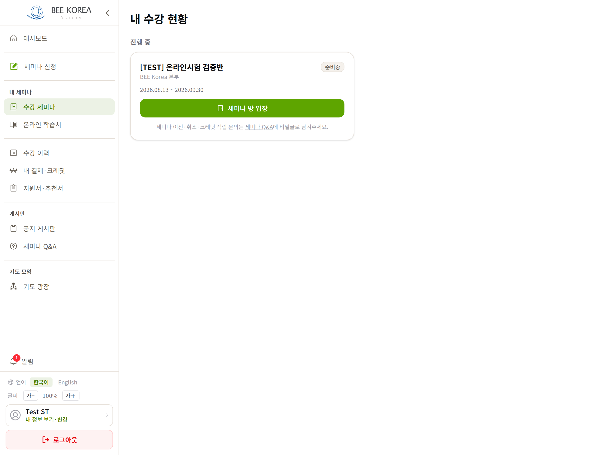
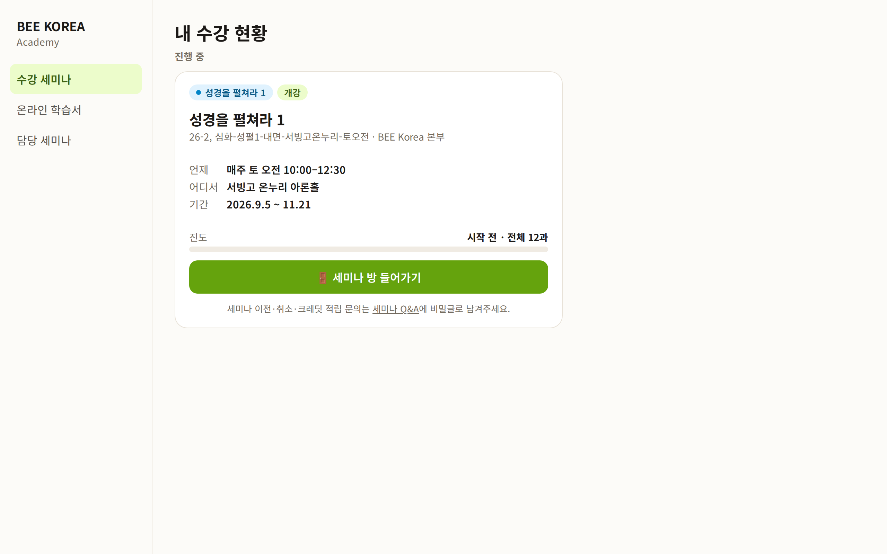
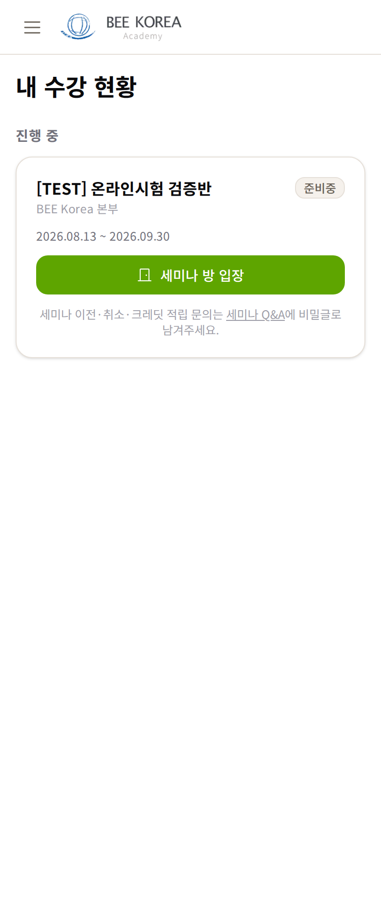
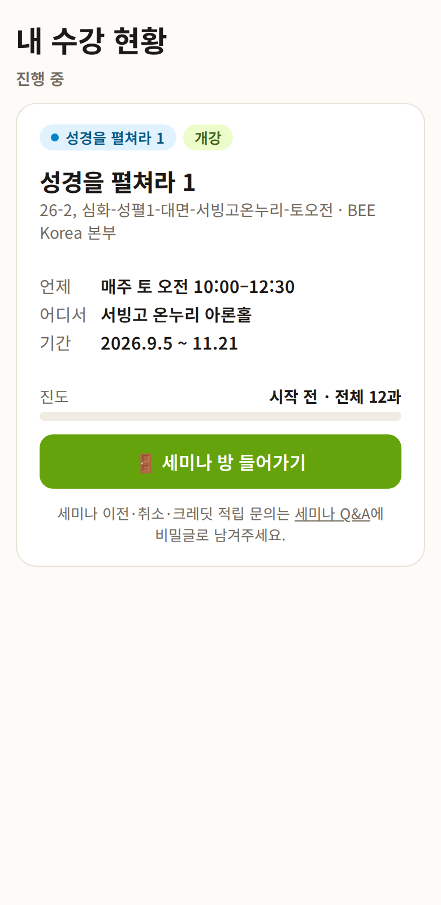
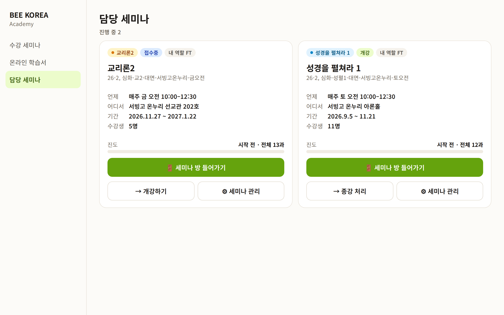
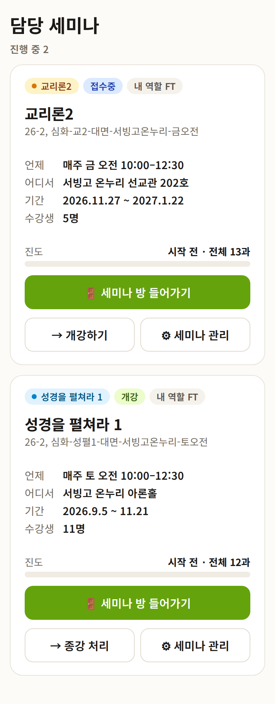

LMS 수강 세미나 · 담당 세미나 — 디자인 시안 1차
2026-10-11 · 학생·인도자가 세미나 방으로 들어가는 문 · 반 정보는 실제 값(교리론2 금 오전·성경을 펼쳐라 1 토 오전), 사람 이름은 없음 · 아직 적용 전
무엇이 바뀌나 (두 화면 같은 모양)
- 제목 = 과목 이름 — 관리용 반 이름은 아래 작게(세미나 방과 같은 규칙)
- 언제 · 어디서 · 기간(인도자는 + 수강생 수) — 지금은 날짜만 있고 수업 요일·시간·장소가 없습니다
- 진도 막대 — 「시작 전 · 전체 12과」/「5과 / 12과」
- [세미나 방 들어가기] 큰 단추 하나가 주 행동
- 담당 세미나: 지금 톱니바퀴 그림만 있는 단추(세미나 관리) → 글자 있는 [⚙ 세미나 관리](규칙: 그림만 있는 단추 금지). [개강하기]·[종강 처리](FT만)는 지금처럼 확인 창을 거치되, 작은 글자 단추에서 같은 크기 단추로
- 글자 크기 — 인도자 화면도 노년층 배려 대상. 수강생 수·기간이 지금은 아주 작은 글자(text-xs)
수강 세미나 (학생)




담당 세미나 (인도자)
지금 화면: 카드 위에 반 이름 · 상태 · 내 역할 칩 · 톱니바퀴 그림 단추, 아래에 작은 글자로 「수강생 5명 FT: …」·날짜·진도 막대, 맨 아래 작은 [개강하기]/[종강 처리]·[세미나 방 입장] — 인도자 계정으로 찍을 수 없어 그림 대신 글로 적었습니다.


정해 주실 것
- [종강 처리]를 카드에 그대로 둘까요? 지금도 카드에 있고 확인 창을 거칩니다. 자주 쓰지 않는 단추라 「세미나 관리」 안으로 넣는 방법도 있습니다.
- 수강 세미나 카드에 「새 공지 1」 같은 표시를 붙일까요? 반마다 공지를 한 번씩 더 불러와야 해서 화면이 조금 늦어질 수 있습니다.